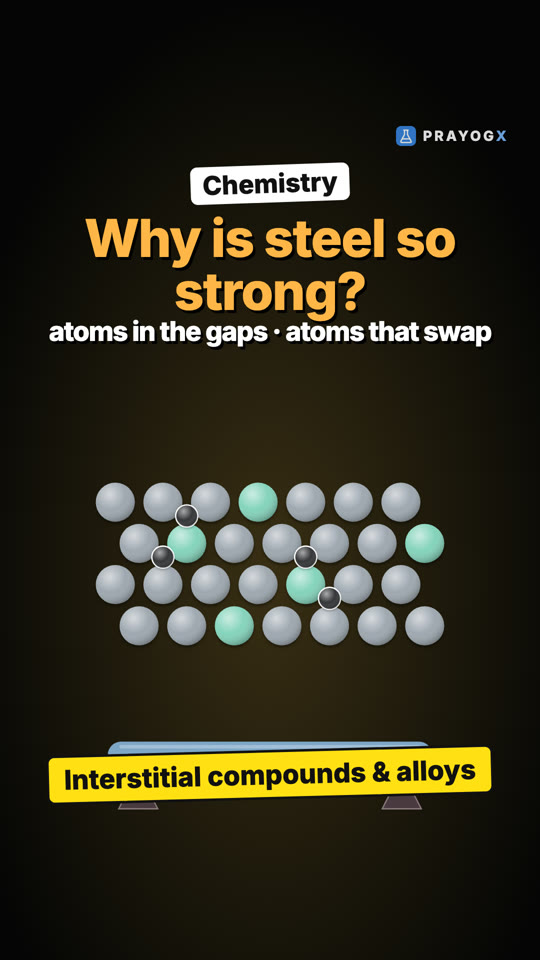
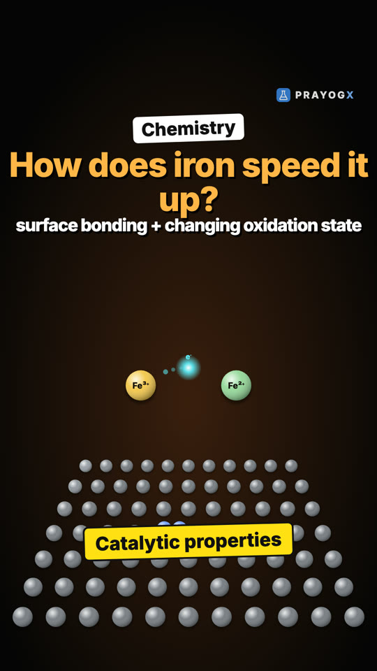

Choose your class
Every subject is laid out chapter by chapter. Each topic has a short Doodle video, notes you can download and a quick quiz.
Class 9Motion, matter, the cell and number systems: the foundations of school science and maths.ScienceMathematics21 videosClass 10Light, electricity, chemical reactions, life processes and the algebra and geometry of board year.ScienceMathematics9 videosClass 11Mechanics, thermodynamics, atomic structure, bonding, functions and the living world.PhysicsChemistryMathematicsBiology16 videosClass 12Electromagnetism, optics, modern physics, solutions and kinetics, calculus and genetics.PhysicsChemistryMathematicsBiology47 videosExtra / SupplementaryCurious questions beyond the syllabus: why the sky is blue, why we yawn, why 0.999… equals 1, and more.ScienceBiologyMathematics11 videos
Newest videos
 No d Electrons, Still Purple: Why KMnO₄ Is So Intensely ColouredIn MnO₄⁻ manganese is +7 (3d⁰), so no d–d transition is possible. The colour comes from ligand-to-metal charge transfer: visible light moves an electron from an oxygen into the empty d orbitals of Mn. This absorbs green-yellow light (≈ 525 nm), so the solution looks purple. Charge transfer is an allowed transition, so it absorbs far more light than restricted d–d transitions: KMnO₄ is intensely coloured while Ti³⁺(aq) or Mn²⁺(aq) are pale. Chromate (yellow) and dichromate (orange), also d⁰, are coloured the same way.The d- and f-Block Elements · Chemistry
No d Electrons, Still Purple: Why KMnO₄ Is So Intensely ColouredIn MnO₄⁻ manganese is +7 (3d⁰), so no d–d transition is possible. The colour comes from ligand-to-metal charge transfer: visible light moves an electron from an oxygen into the empty d orbitals of Mn. This absorbs green-yellow light (≈ 525 nm), so the solution looks purple. Charge transfer is an allowed transition, so it absorbs far more light than restricted d–d transitions: KMnO₄ is intensely coloured while Ti³⁺(aq) or Mn²⁺(aq) are pale. Chromate (yellow) and dichromate (orange), also d⁰, are coloured the same way.The d- and f-Block Elements · Chemistry The Mineral Chameleon: Potassium PermanganatePotassium permanganate is made by fusing pyrolusite (MnO₂) with KOH and an oxidiser to give dark green potassium manganate (Mn +6). In neutral or acidic water manganate disproportionates (3MnO₄²⁻ + 4H⁺ → 2MnO₄⁻ + MnO₂ + 2H₂O), the 'mineral chameleon' Glauber saw; commercially it is oxidised at an anode. In acid MnO₄⁻ takes 5 electrons to give almost colourless Mn²⁺ (so it is its own indicator in titrations); in neutral or faintly alkaline solution it takes 3 electrons and gives brown MnO₂.The d- and f-Block Elements · Chemistry
The Mineral Chameleon: Potassium PermanganatePotassium permanganate is made by fusing pyrolusite (MnO₂) with KOH and an oxidiser to give dark green potassium manganate (Mn +6). In neutral or acidic water manganate disproportionates (3MnO₄²⁻ + 4H⁺ → 2MnO₄⁻ + MnO₂ + 2H₂O), the 'mineral chameleon' Glauber saw; commercially it is oxidised at an anode. In acid MnO₄⁻ takes 5 electrons to give almost colourless Mn²⁺ (so it is its own indicator in titrations); in neutral or faintly alkaline solution it takes 3 electrons and gives brown MnO₂.The d- and f-Block Elements · Chemistry The Orange That Turns Green: Potassium DichromatePotassium dichromate is made from chromite ore: fusion with sodium carbonate in air gives yellow sodium chromate (Fe₂O₃ is filtered off), acid turns it into orange sodium dichromate (two CrO₄ tetrahedra share one oxygen), and KCl precipitates the less soluble K₂Cr₂O₇. Chromate and dichromate interconvert with pH while Cr stays +6. In acid, Cr₂O₇²⁻ + 14H⁺ + 6e⁻ → 2Cr³⁺ + 7H₂O (E° = 1.33 V): a strong oxidising agent that turns orange to green, oxidising Fe²⁺, I⁻, H₂S and, in the 1954 breathalyser, ethanol.The d- and f-Block Elements · Chemistry
The Orange That Turns Green: Potassium DichromatePotassium dichromate is made from chromite ore: fusion with sodium carbonate in air gives yellow sodium chromate (Fe₂O₃ is filtered off), acid turns it into orange sodium dichromate (two CrO₄ tetrahedra share one oxygen), and KCl precipitates the less soluble K₂Cr₂O₇. Chromate and dichromate interconvert with pH while Cr stays +6. In acid, Cr₂O₇²⁻ + 14H⁺ + 6e⁻ → 2Cr³⁺ + 7H₂O (E° = 1.33 V): a strong oxidising agent that turns orange to green, oxidising Fe²⁺, I⁻, H₂S and, in the 1954 breathalyser, ethanol.The d- and f-Block Elements · Chemistry
Iron Bends, Steel Holds: Interstitial Compounds and AlloysPure iron bends because layers of atoms slide over each other; less than 2 % carbon in the gaps locks the layers and gives hard steel. Interstitial compounds form when small atoms such as H, C or N are trapped in a metal lattice (TiC, Mn₄N, Fe₃H, VH₀.₅₆, TiH₁.₇): non-stoichiometric, very hard, higher melting than the pure metal, still conducting and chemically inert. Alloys form when atoms of similar size (metallic radii within about 15 %, e.g. Fe 126 and Cr 129 pm) are distributed randomly among each other: stainless steel, brass (Cu–Zn) and bronze (Cu–Sn), hard and often high melting.The d- and f-Block Elements · Chemistry
Iron, Nitrogen and an Electron Ferry: Why Transition Metals Are Good CatalystsA catalyst speeds up a reaction without being used up by lowering its activation energy. Transition metals are good catalysts because they can adopt multiple oxidation states and form complexes. On a metal surface (iron in the Haber process, V₂O₅ in the Contact process, nickel in hydrogenation) reactant molecules bond to surface atoms using 3d and 4s electrons, so their concentration rises and their bonds weaken. In solution, Fe³⁺ ferries electrons between I⁻ and S₂O₈²⁻ (2Fe³⁺ + 2I⁻ → 2Fe²⁺ + I₂; 2Fe²⁺ + S₂O₈²⁻ → 2Fe³⁺ + 2SO₄²⁻) and is regenerated.The d- and f-Block Elements · Chemistry One Drop, Blood Red: Why Transition Metals Form ComplexesA complex is a central metal ion bonded to several ligands (anions or neutral molecules) by coordinate bonds, in which the ligand gives both electrons. One drop of KSCN turns pale-yellow Fe³⁺ blood red as [Fe(SCN)(H₂O)₅]²⁺ forms, while the K⁺ from the same drop grabs nothing. Transition-metal ions form far more complexes because they are small (Fe³⁺ 65 pm vs K⁺ 138 pm), highly charged (+3 vs +1) and have d orbitals available for bond formation.The d- and f-Block Elements · Chemistry
One Drop, Blood Red: Why Transition Metals Form ComplexesA complex is a central metal ion bonded to several ligands (anions or neutral molecules) by coordinate bonds, in which the ligand gives both electrons. One drop of KSCN turns pale-yellow Fe³⁺ blood red as [Fe(SCN)(H₂O)₅]²⁺ forms, while the K⁺ from the same drop grabs nothing. Transition-metal ions form far more complexes because they are small (Fe³⁺ 65 pm vs K⁺ 138 pm), highly charged (+3 vs +1) and have d orbitals available for bond formation.The d- and f-Block Elements · Chemistry